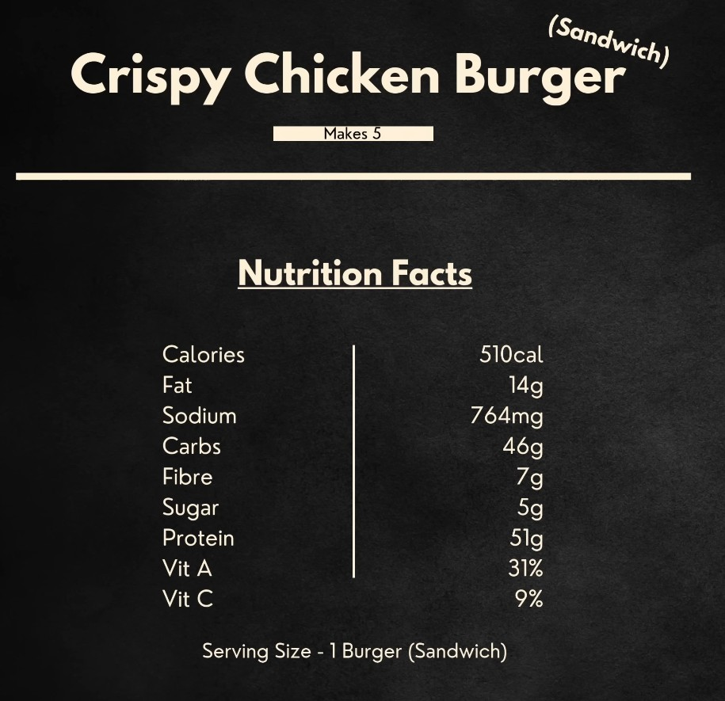

Cooking
Cooking blends creativity with patience, turning simple ingredients into something satisfying. One of my go-to meals is a homemade chicken sandwich, because it is both fast to prepare and surprisingly nutritious. Lean chicken provides a strong protein base, which makes it a great option for anyone focused on training or staying active. The sandwich can be made in under fifteen minutes with basic ingredients, and you can customize it with fresh vegetables, sauces, or different breads. It packs well for lunch, stays fresh, and works perfectly as an on-the-go meal whether heading to school, work, or the gym. It is an easy way to eat well without sacrificing time or taste. Click on the video on the left to see how easy it is.
Chicken Sandwich - Products
- Burger bun
- Panko bread crumbs
- Chicken (I prefer Chicken Breast)
- Lettuce
- Any additional toppings you like and some sauce

